class: center <br> # Spatial Analysis of Urban Data ## Lecture: Raster Data Analysis in GIS ## Lecture and Tutorial: Spatial Analysis of Raster Data [Bayi Li](mailto:barryli081@gmail.com) <br> .toc-wrapper[ <div class="toc"> <a href="#week8-focus" class="toc-item">Week 8 Focus</a> <a href="#raster-general" class="toc-item">Raster Concepts</a> <a href="#operations" class="toc-item">Raster Operations</a> <a href="#example-analysis" class="toc-item">Applied Examples</a> </div> ] --- ## Raster Data name: week8-focus - [Raster Data Model](#raster-general) ## Week 8 Focus This lecture introduces raster data as a major model for representing continuous spatial phenomena and remote sensing imagery. - understand when raster is more suitable than vector - distinguish between continuous, categorical, single-band, and multi-band rasters - learn the logic of clipping, reclassification, overlay, and zonal statistics - connect raster analysis to urban environmental and remote sensing questions --- ## Learning Objectives By the end of this session, students should be able to: 1. explain how raster data represents space as a grid of cells 2. distinguish between common raster types and sources 3. interpret raster bands, cell values, extent, and resolution 4. describe core raster operations used in GIS and remote sensing 5. apply raster analysis concepts to urban questions such as vegetation, temperature, and urban growth --- ## Lecture Outline 1. Raster data model and raster types 2. Bands, resolution, and interpretation 3. Core raster operations in GIS 4. Remote sensing indices and urban applications 5. Tutorial workflow in QGIS and Python --- name: raster-general .right_half[ .right_half[ <figure> <img src="imgs/vector_n_raster_presentation.png" width="100%"> <figcaption>Raster and vector represent space differently and suit different kinds of phenomena.</figcaption> <figsubcaption>Source: https://gis.stackexchange.com/questions/7077/what-are-raster-and-vector-data-in-gis-and-when-to-use</figsubcaption> </figure> ] <figure> <img src="imgs/vector_n_raster_presentation.png" width="100%"> <figcaption>Raster and vector representation of real world entities.</figcaption> <figsubcaption>Source: Unknown authour, https://gis.stackexchange.com/questions/7077/what-are-raster-and-vector-data-in-gis-and-when-to-use</figsubcaption> Urban features such as buildings, parcels, roads, parks, and zones often have clearly defined boundaries, making vector data more appropriate for those discrete elements. Raster is more appropriate when the phenomenon is continuous, gridded, image-based, or measured repeatedly across space. --- ] | | Elevation and Terrain | | Climate and Weather | | Remote Sensing Imagery | | Soil and Geology | |-|-----|-|-----|-|-----|-|-----| |*| Digital Elevation Models (DEM) |*| Temperature distribution |*| Satellite images (multiband) |*| Soil moisture | |*| Slope and aspect analysis |*| Rainfall and humidity surfaces |*| Vegetation indices (NDVI) |*| Mineral concentration | <br> | | Environmental Pollution | | Hydrology | | Agriculture | | Hazard and Risk Mapping | |-|-----|-|-----|-|-----|-|-----| |*| Air quality index |*| Flood depth maps |*| Crop health monitoring |*| Landslide susceptibility | |*| Noise pollution gradients |*| Groundwater potential zones |*| Biomass estimation |*| Wildfire risk zones | --- name: single-band-raster ## Single-band Raster ### Continuous Raster A raster in which cell values vary continuously to form a surface. <div align="center"> <figure> <p>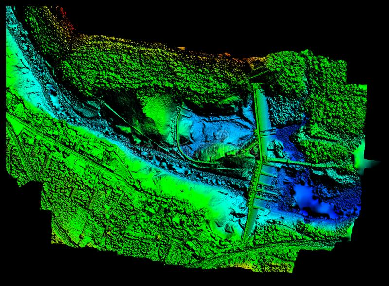</p> <figcaption>Example raster: Digital Elevation Models.</figcaption> <figsubcaption>Source: AI Singapore, https://aisingapore.org/tech-offers/improving-satellite-digital-elevation-models-dem-using-ai/</figsubcaption> </figure> </div> *Reference: https://support.esri.com/en-us/gis-dictionary/continuous-raster* --- ## Single-band Raster ### Discrete (Categorical) Raster A raster that typically represents phenomena that have clear boundaries with attributes that are descriptions, classes, or categories. <div align="center"> <figure> <p>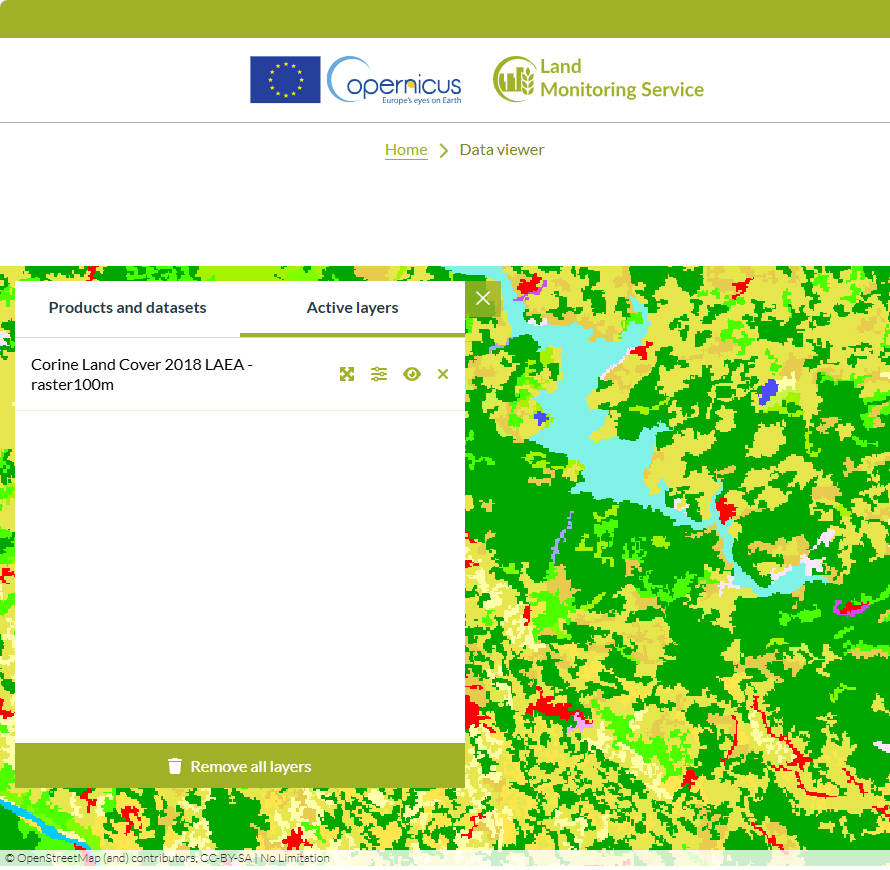</p> <figcaption>Example raster: Corine Land Cover 2018 LAEA-raster 100m.</figcaption> <figsubcaption>Source: https://land.copernicus.eu/en/map-viewer?product=130299ac96e54c30a12edd575eff80f7/</figsubcaption> </figure> </div> *Reference: https://support.esri.com/en-us/gis-dictionary/discrete-raster* --- <xL>Why does Singapore use the vector data model for land use, while some global land use/land cover datasets use the raster data model?</xL> -- | **Aspect** | **Vector Representation** | **Raster Representation** | |------------------------|------------------------------------------------------------|-----------------------------------------------------------| | **Best for** | Precise boundaries (parcels, zones, administrative areas) | Continuous coverage or classified imagery | | **Typical Source** | Cadastral maps, planning datasets | Remote sensing classification, satellite imagery | | **Attribute Handling** | Rich attribute tables for each feature | Limited attributes (usually one value per cell) | | **Scale** | Detailed, small-scale urban planning | Large-scale regional or global analysis | | **Advantages** | Accurate geometry, supports topology | Efficient for raster-based analysis and modeling | | **Disadvantages** | Complex for large areas, harder for pixel-based analysis | Less precise boundaries, large file size for high resolution | | **Common Uses** | Zoning, parcel management, infrastructure planning | Land cover classification, change detection, suitability analysis | --- name: multi-band-raster ## Multi-band Raster Practice: Drag the example_raster.jpg image into QGIS to explore its bands. -- <div align="center"> <figure> <p>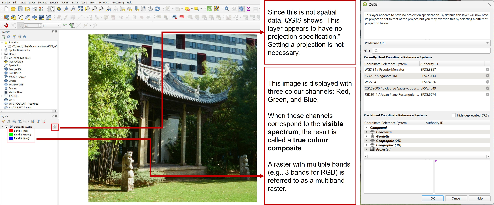</p> <figcaption>Example raster: A non-spatial multi-band image.</figcaption> </figure> </div> --- .right_half[ <figure> <p>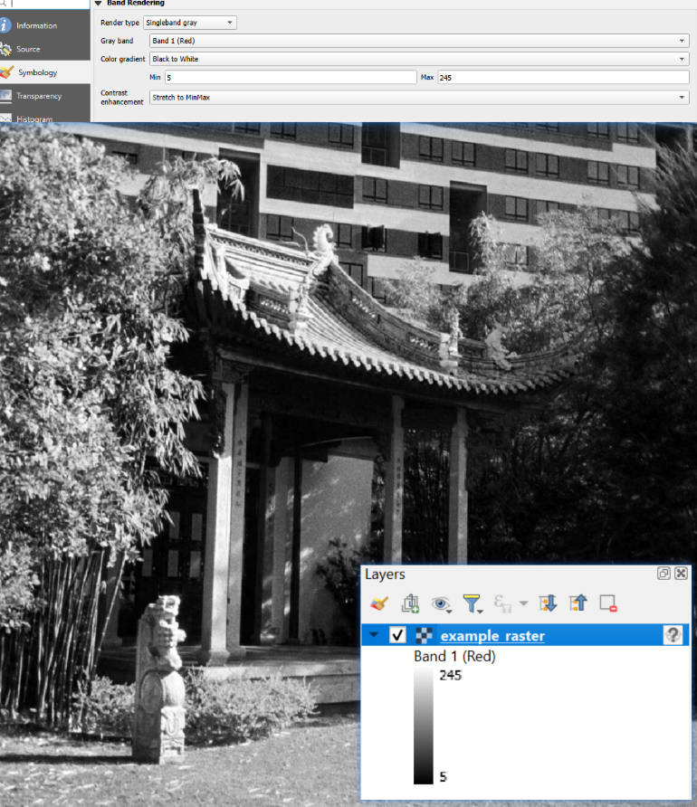</p> <figcaption>Example raster: Displaying only one band of the non-spatial multi-band image.</figcaption> </figure> ] ## Multi-band Raster You can apply in the symbology setting to display only one band of the image. --- .left_half[ <figure> <p>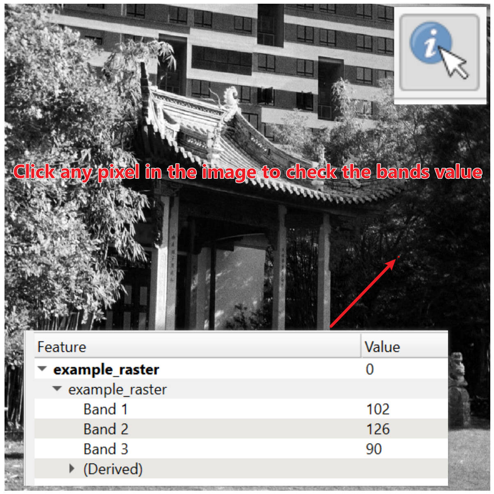</p> <figcaption>Click any pixel to view its value.</figcaption> </figure> ] ## Multi-band Raster You can click on any pixel to view its value. --- ### False Colour **True colour:** A composite image where the Red, Green, and Blue bands correspond to the visible light spectrum as perceived by the human eye. **False colour:** A composite image where the Red, Green, and Blue bands are assigned to different wavelengths, such as near-infrared, red, and green, to highlight specific features. <xL>Purpose: Highlighting specific features.</xL> <div align="center"> <figure> <p>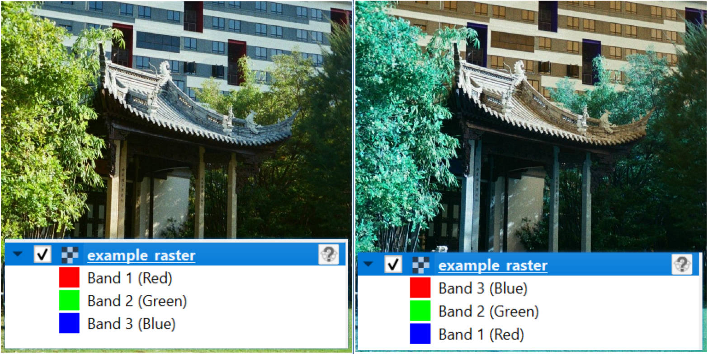</p> <figcaption>Left: True colour; Right: False colour.</figcaption> </figure> </div> --- .right_half[ <figure> <p>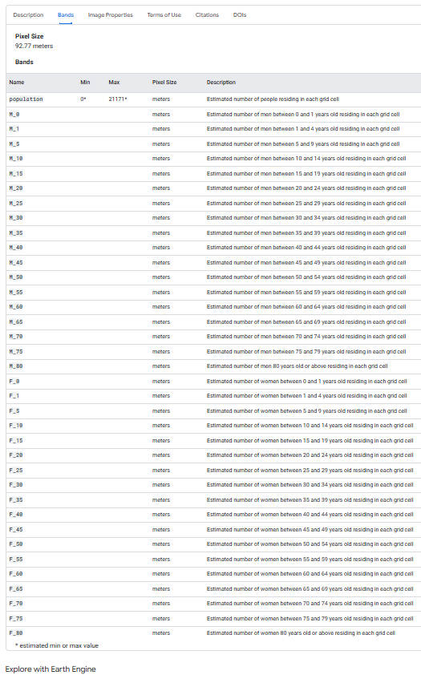</p> <figcaption>The band information for WorldPop Estimated Age and Sex Structures.</figcaption> </figure> ] ## Multi-band Raster ### Example: WorldPop Estimated Age and Sex Structures [WorldPop Global Project Population Data: Estimated Age and Sex Structures of Residential Population per 100x100m Grid Square](https://developers.google.com/earth-engine/datasets/catalog/WorldPop_GP_100m_pop_age_sex#bands) **What information can you extract from the dataset description and metadata introduction?** --- name: operations ## Spatial Analysis of Raster Data - Like the geoprocessing tools available for use on vector datasets, raster data can undergo similar spatial operations. - The actual computation of these operations is significantly different from their vector counterparts, but the concept is similar. - A raster operation may involve two or more rasters --- ### Data analysis environment - Specifying the area extent and output cell size - **Union options**: encompasses all input rasters - **Intersect option** uses an area extent that is common to all input rasters - An **analysis mask**, either a feature layer or a raster, can also determine the area extent for analysis <div align="center"> <figure> <p>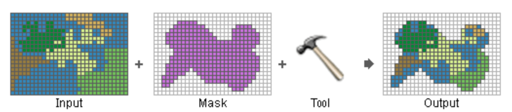</p> </figure> </div> --- ### Scale of Raster Analysis <div align="center"> <figure> <p>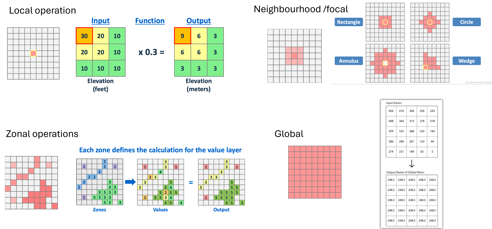</p> </figure> </div> --- .right_half[ <figure> <p>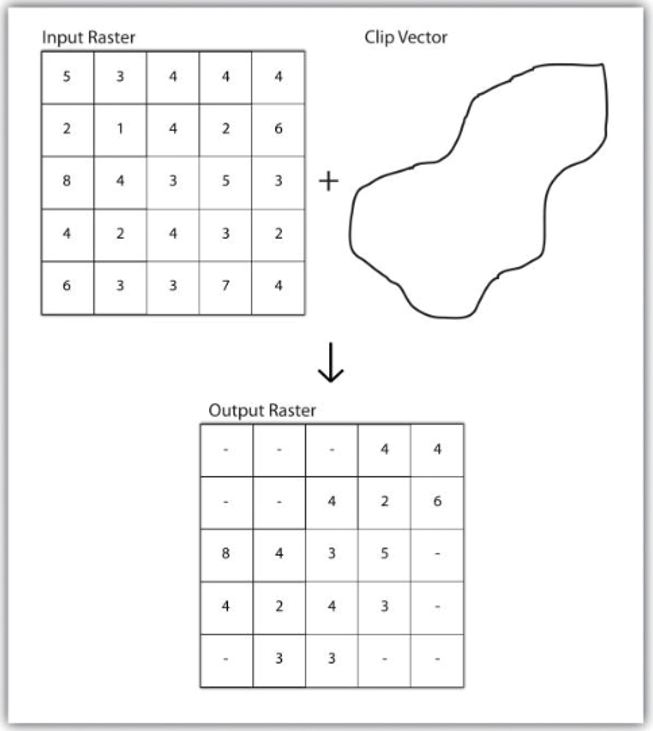</p> </figure> ] ### Clipping a Raster - A raster dataset can also be clipped similar to a vector dataset. - Here, the input raster is overlain by a vector polygon clip layer. - The raster clip process results in a single raster that is identical to the input raster but shares the extent of the polygon clip layer. --- .left_half[ ### Clipping a Raster Clipping a raster with a vector in GIS (including QGIS) works by using the geometry of the vector layer as a mask to extract only the portion of the raster that falls within the vector’s boundaries. <div align="center"> <figure> <p>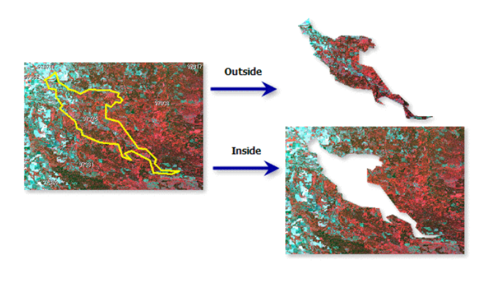</p> </figure> </div> ] .right_half[ <figure> <p>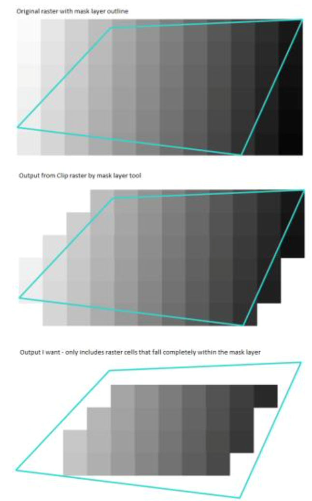</p> </figure> ] .clear[ ] --- .right_half[ <figure> <p>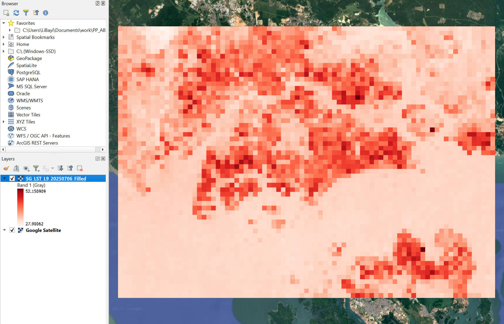</p> </figure> ] ### Practice: Clipping a Raster Drag the file: **data/SG_LST_L9_20250706_Filled.tif** into QGIS LST refers to Land Surface Temperature. It is a measure of the radiative skin temperature of the Earth’s surface. 1. Right-click on the raster layer and select **Properties**. 2. Go to the **Symbology** tab. 3. Choose a suitable colour ramp to visualize the temperature values. 4. Click **OK** to apply the changes. <xL>Can you clip the raster to the extent of Singapore?</xL> --- ### Reclassifying - Reclassifying, or recoding, a dataset is commonly one of the first steps undertaken during raster analysis - Reclassification is the process of assigning a new class or range value to all pixels in the dataset based on their original values <div align="center"> <figure> <p>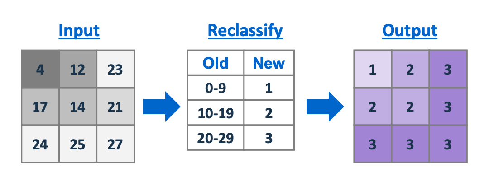</p> </figure> </div> --- ### Raster Overlays - Raster overlays are relatively simple compared to vector overlays and require much less computational power - Mathematical raster overlay (Map algebra): Pixel or grid cell values in each map are combined using mathematical operators to produce a new value in the composite map. <div align="center"> <figure> <p>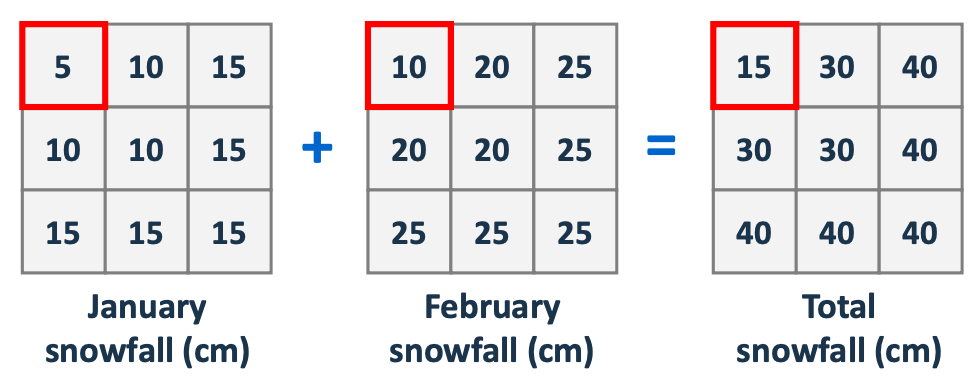</p> </figure> </div> --- .right_half[ <figure> <p>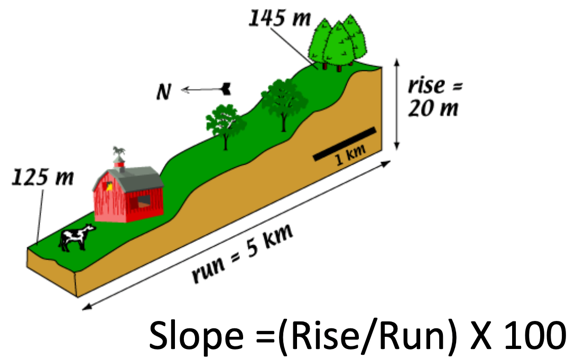</p> </figure> ] ### Map algebra A set of primitive operations in a GIS allowing two or more raster layers of similar dimensions to produce a new raster layer using algebraic operations. Can be run from a raster calculator or by scripting. Example: measuring slopes from and elevation model ```python slope_d = Slope(“emidalat”, “degree”) “slope_d”, a slope raster measured in degree “emidalat” an elevation raster ExtractByAttributes(“slope_d”, “Value < 20”) ExtractByAttributes(Slope(“emidalat”, “DEGREE”), “Value < 20”) ``` --- ## Why Raster Analysis Matters in Urban Studies Raster workflows are especially useful when the question concerns: - land surface temperature - vegetation condition - elevation and slope - broad environmental exposure surfaces - repeated satellite observations through time Raster analysis is central whenever the phenomenon is measured continuously or captured through imagery. --- ### Landsat series The Landsat series is a long-running program of Earth observation satellites jointly managed by NASA and the U.S. Geological Survey (USGS). It’s one of the most important sources of continuous, high-resolution imagery of the Earth’s land surface, used for environmental monitoring, resource management, and scientific research. <div align="center"> <figure> <p>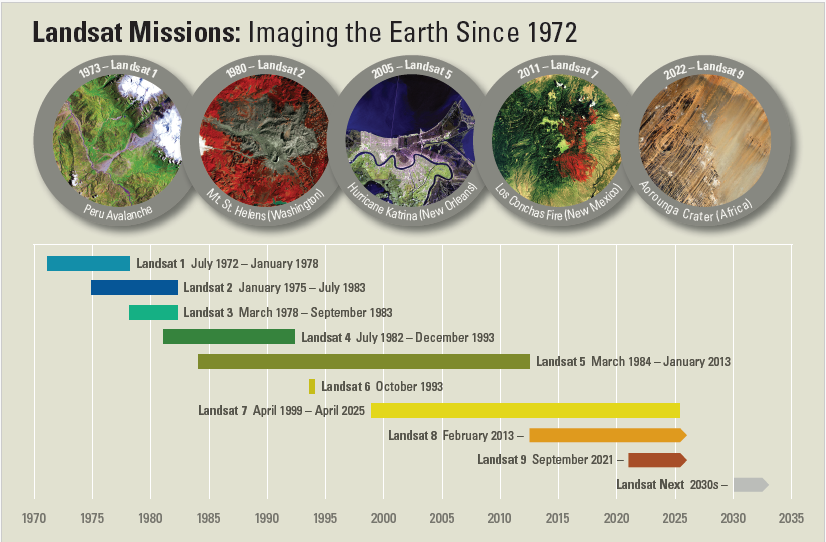</p> <figcaption>The Landsat series timeline.</figcaption> <figsubcaption>Source: https://www.usgs.gov/media/images/landsat-missions-timeline</figsubcaption> </figure> </div> --- ### Landsat series In **Landsat 8-9 Operational Land Imager (OLI) and Thermal Infrared Sensor (TIRS**): | Bands | Wavelength (micrometers) | Resolution (meters) | | ------------------------------------ | ------------------------ | ------------------- | | Band 1 - Coastal aerosol | 0.43-0.45 | 30 | | Band 2 - Blue | 0.45-0.51 | 30 | | Band 3 - Green | 0.53-0.59 | 30 | | Band 4 - **Red** | 0.64-0.67 | 30 | | Band 5 - **Near Infrared (NIR)** | 0.85-0.88 | 30 | | Band 6 - Shortwave Infrared (SWIR) 1 | 1.57-1.65 | 30 | | Band 7 - Shortwave Infrared (SWIR) 2 | 2.11-2.29 | 30 | | Band 8 - Panchromatic | 0.50-0.68 | 15 | | Band 9 - Cirrus | 1.36-1.38 | 30 | | Band 10 - Thermal Infrared (TIRS) 1 | 10.6-11.19 | 100 | | Band 11 - Thermal Infrared (TIRS) 2 | 11.50-12.51 | 100 | --- name: example-analysis ## Application of Raster Analysis #### Calculate NDVI (Normalized Difference Vegetation Index) NDVI uses the Near Infrared (NIR) and Red bands from sensors like Landsat 8’s OLI because vegetation strongly reflects **NIR light** and absorbs **red light**. <div align="center"> <figure> <p>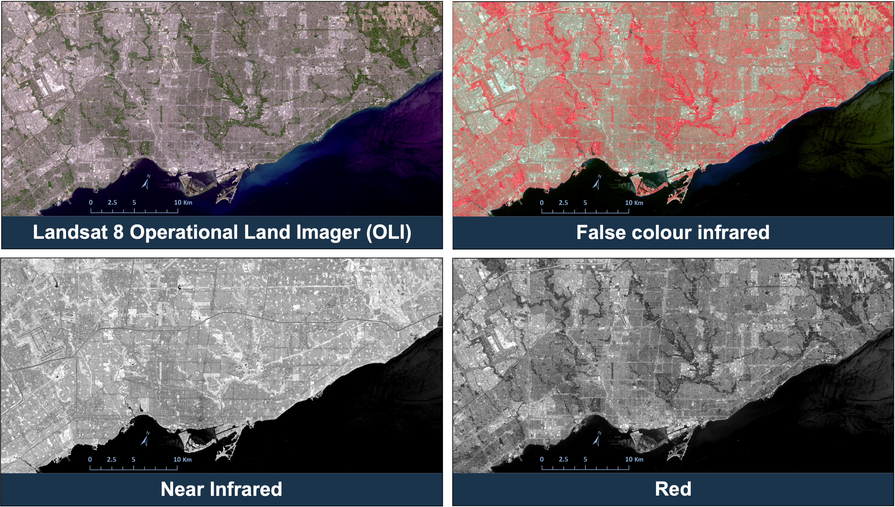</p> </figure> </div> --- .right_half[ <figure> <p>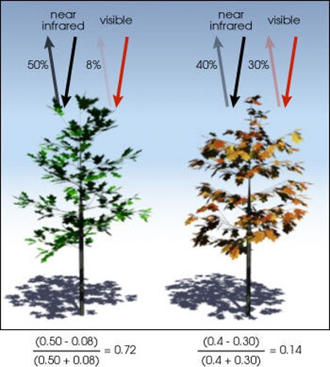</p> </figure> ] ### Application of raster analysis #### Calculate NVDI NDVI is used to quantify vegetation greenness and is useful in understanding vegetation density and assessing changes in plant health. <figure> <p>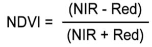</p> </figure> In Landsat 4-7, NDVI = (Band 4 – Band 3) / (Band 4 + Band 3). In Landsat 8-9, NDVI = (Band 5 – Band 4) / (Band 5 + Band 4). Healthy vegetation (chlorophyll) reflects more near-infrared (NIR) and green light compared to other wavelengths. But it absorbs more red and blue light. *Urban Vegetation Classes and NDVI value (Source: [Urban vegetation classification with NDVI threshold value method with very high resolution (VHR) Pleiades imagery](https://isprs-archives.copernicus.org/articles/XLII-4-W16/237/2019/))* --- .right_half[ <figure> <p>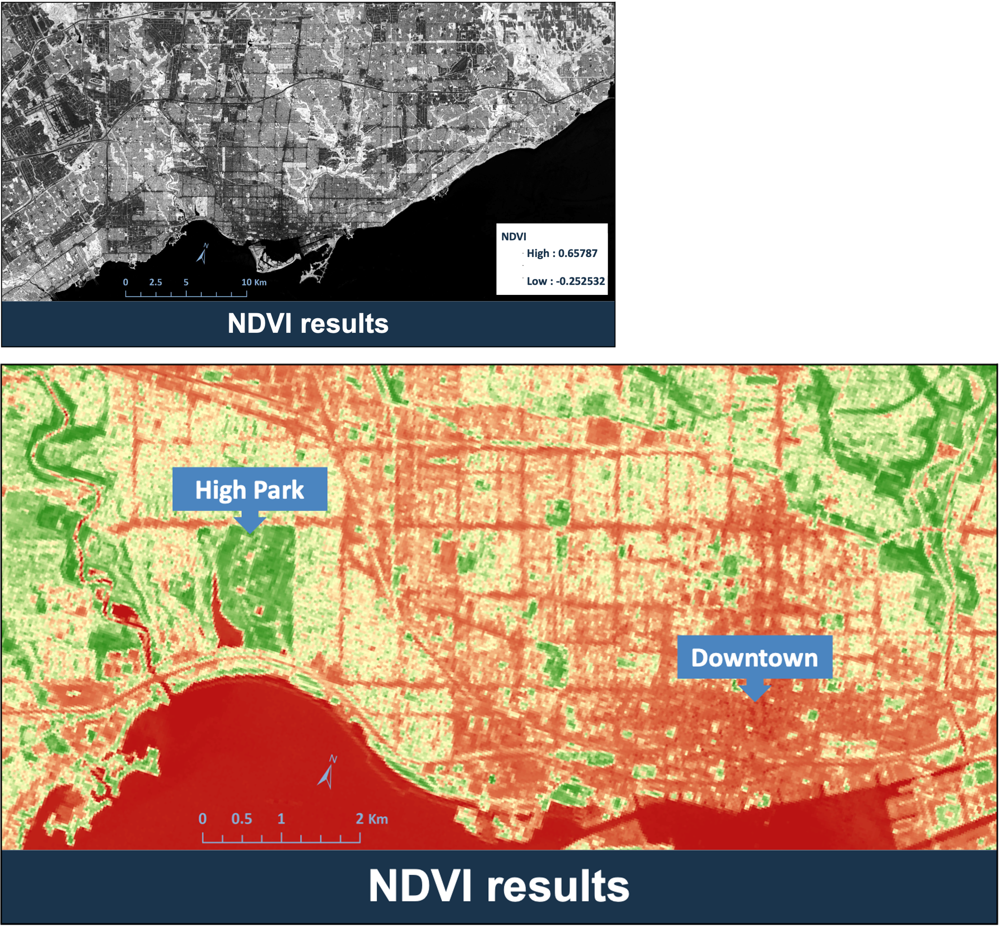</p> </figure> ] ### Application of raster analysis #### Calculate NVDI By comparing these two, NDVI measures vegetation health: - Values close to +1 → dense, healthy vegetation. - Values near 0 → bare soil or sparse vegetation. - Negative values → water or non-vegetated surfaces. --- .right_half[ <figure> <p>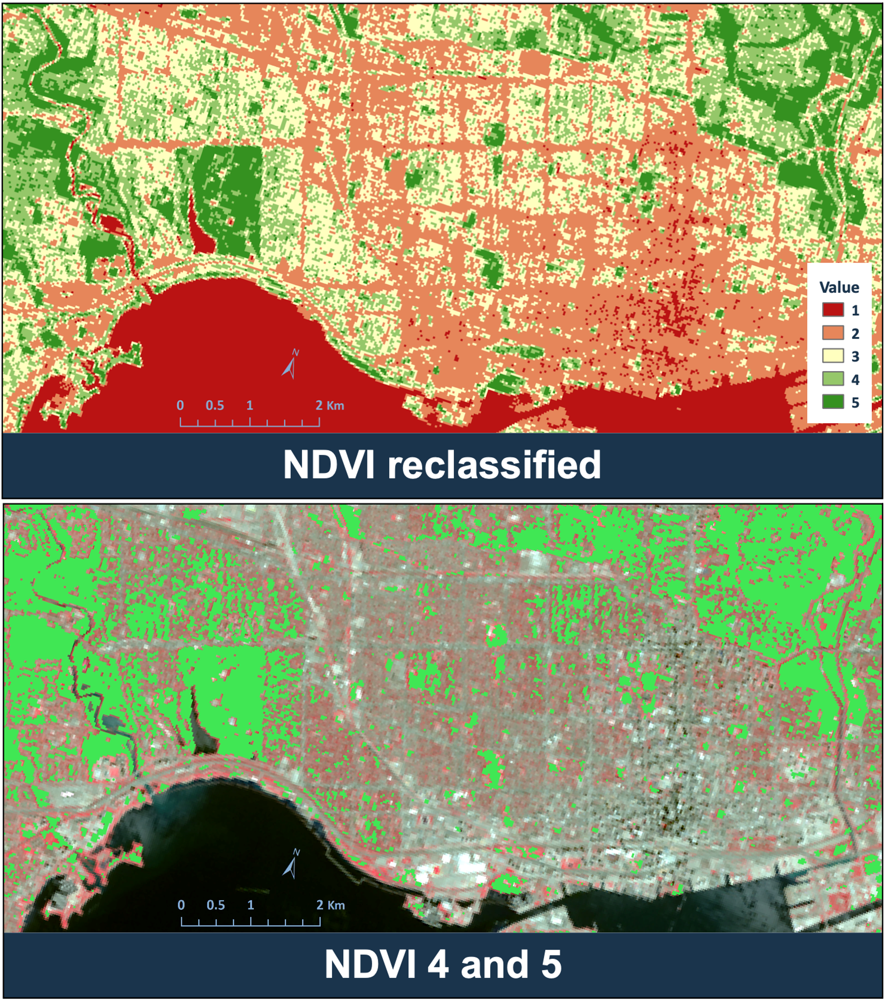</p> </figure> ] ### Application of raster analysis #### Calculate NVDI Reclassification turns NDVI from a continuous index into actionable categories for interpretation, mapping, and modeling. | **Class** | **NDVI Range** | **Interpretation** | |----------------------|----------------------|--------------------------------| | **1** | < 0.0 | Water / Non-vegetated | | **2** | 0.0 – 0.2 | Bare soil / Built-up areas | | **3** | 0.2 – 0.4 | Sparse vegetation | | **4** | 0.4 – 0.6 | Moderate vegetation | | **5** | > 0.6 | Dense, healthy vegetation | --- ### Application of raster analysis #### Calculate NDVI Zonal Statistics <div align="center"> <figure> <p>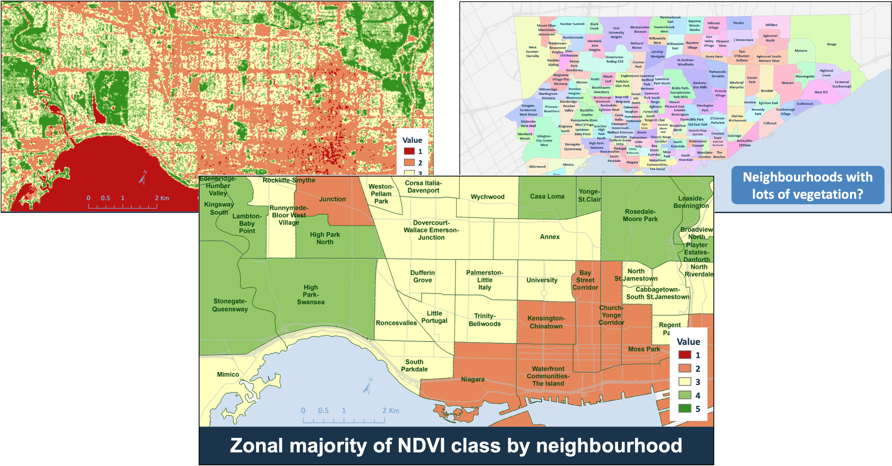</p> </figure> </div> --- <xL>Can you apply zonal statistics to LST data for Singapore to calculate the average temperature across all planning zones?</xL> <div align="center"> <figure> <p>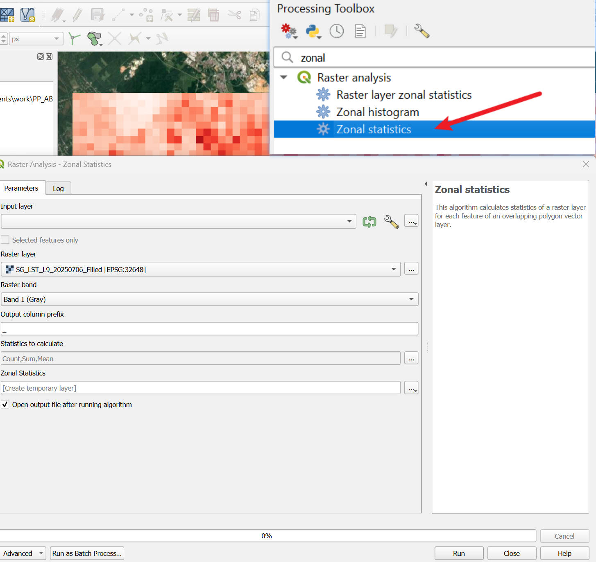</p> </figure> </div> --- ## Urban Environmental Example: Land Surface Temperature Land Surface Temperature (LST) is a strong example of why raster matters in urban studies. - it varies continuously across space - it can be derived from thermal remote sensing - it supports questions about urban heat, vegetation, and built form Raster analysis allows these values to be clipped, reclassified, summarised by zones, and compared through time. --- <div align="center"> <figure> <p>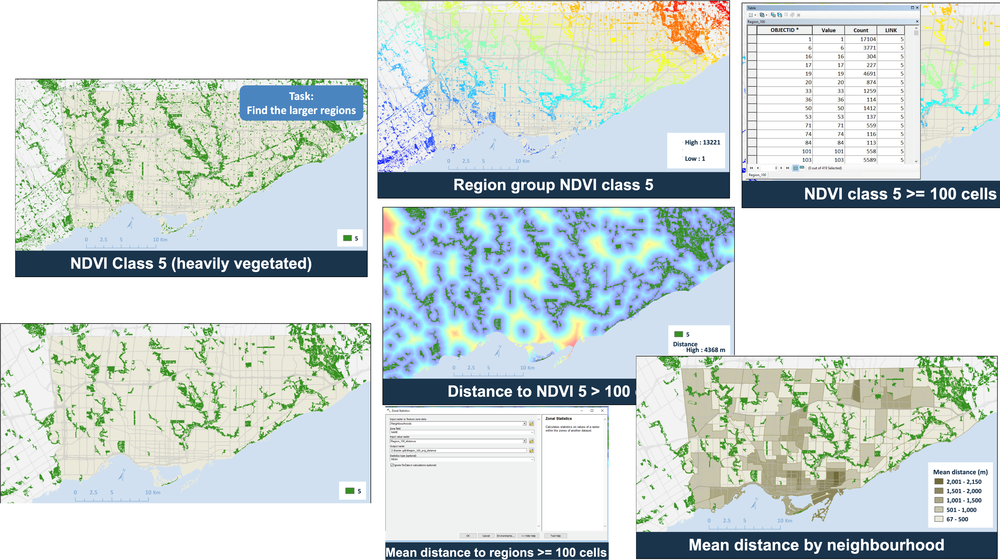</p> </figure> </div> --- ### Other Remote Sensing indices | **Name** | **Bands** | **What it Identifies** | **Use Cases** | |-----------|------------|------------------------|----------------| | **NDVI** (Normalized Difference Vegetation Index) | NIR and Red | Vegetation Health | Agriculture, Forestry | | **NDWI** (Normalized Difference Water Index) | Green and NIR *(McFeeters, 1996)* OR NIR and SWIR *(Gao, 1996)* | Water Bodies (Green-NIR) or Vegetation Water Content (NIR-SWIR) | Flood Mapping, Water Resource Management, Crop Water Stress | | **NDMI** (Normalized Difference Moisture Index) | NIR and SWIR | Vegetation Moisture Content | Drought Monitoring, Irrigation Planning, Fire Risk Assessment | | **NDBI** (Normalized Difference Built-up Index) | SWIR and NIR | Built-up or Urban Areas | Urban Expansion, Land-use Classification | | **EVI** (Enhanced Vegetation Index) | NIR, Red, and Blue | Vegetation Density and Health (corrects atmospheric and soil effects) | Agriculture, Forestry, Dense Vegetation Monitoring | --- ### Nighttime Light Data The **nighttime light (NTL)** data is a kind of remote sensing data to detect the lights from human settlement, gas flares and fires, which is derived from the Defense Meteorological Satellite Programs Operational Linescan System (DMSP/OLS). NTL data is powerful because it provides consistent, global coverage and is often available at high temporal resolution, making it ideal for tracking changes over time. It can be used for urbanization and growth monitoring, as a proxy for socioeconomic indicators, and for studying light pollution, among other applications. <div align="center"> <figure> <p>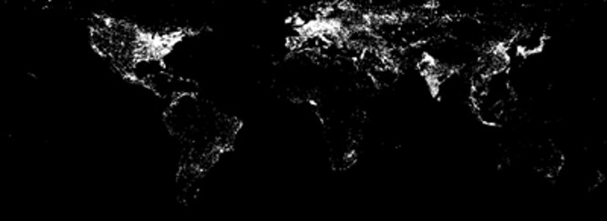</p> </figure> </div> --- ### Example of NTL in Urban Clusters Identification <div align="center"> <figure> <p>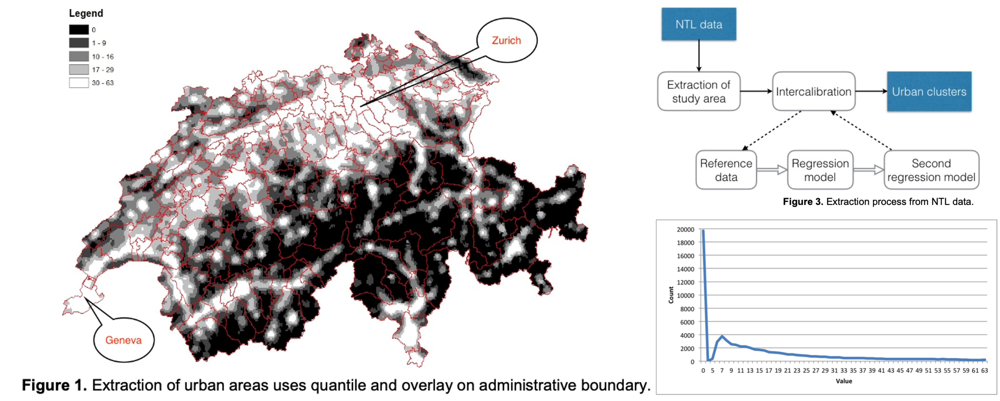</p> </figure> </div> --- ### Example of NTL in Urban Clusters Identification <div align="center"> <figure> <p>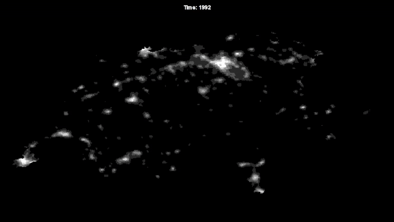</p> </figure> </div> --- ## Google Earth Engine ### A planetary-scale platform for Earth science data & analysis .right_half[ <figure> <p>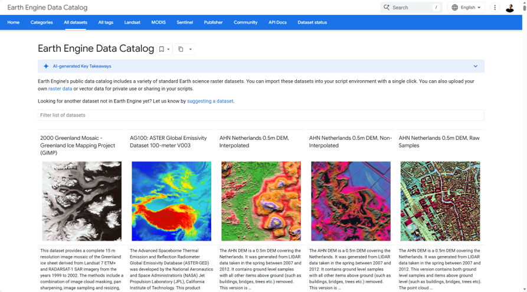</p> <figcaption>Earth Engine Data Catalog.</figcaption> </figure> ] Would you be able to visualize the building footprint data for Singapore using the website and code example provided? https://developers.google.com/earth-engine/datasets/catalog/GOOGLE_Research_open-buildings_v3_polygons --- ## Geemap ### A Python package with GEE .right_half[ <figure> <p>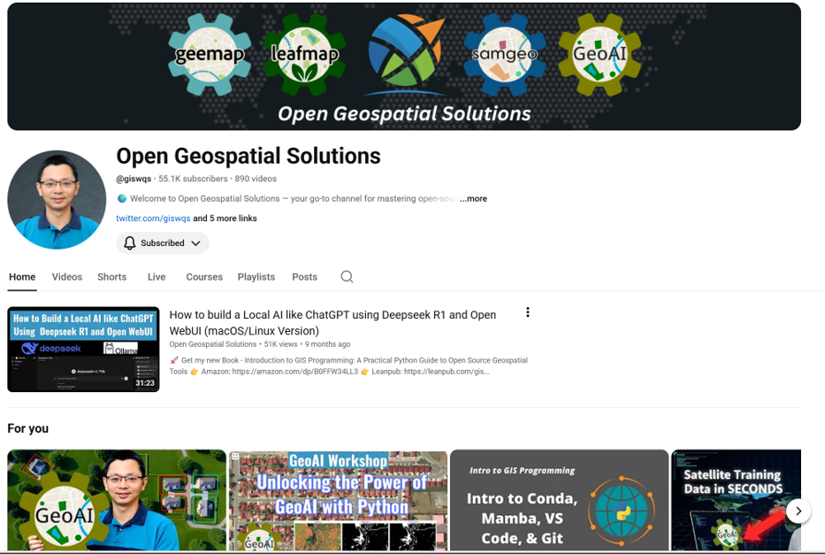</p> <figcaption>Geemap: A Python package for Earth Engine.</figcaption> <figsubcaption>Source: https://www.youtube.com/@giswqs</figsubcaption> </figure> ] For those already familiar with Python, this package simplifies working with GEE significantly. --- ## Tutorial Workflow For week 8, a practical raster workflow is: 1. inspect raster extent, CRS, resolution, and band structure 2. choose suitable symbology to understand the values visually 3. clip or mask the raster to the study area 4. run a basic transformation such as reclassification or index calculation 5. summarise the result with zonal statistics or visual comparison 6. document the assumptions behind resolution, CRS, and thresholds --- ## Reading Materials - Kang-tsung Chang and Carl M. Chang (2019), Introduction to Geographic Information Systems, 9th Edition, Chapter 12 <br> ## Key Takeaways - Raster data represents space as a grid of cells and is especially useful for continuous surfaces and imagery. - Resolution, extent, band structure, and CRS strongly affect raster interpretation. - Core raster operations include clipping, reclassification, overlay, map algebra, and zonal statistics. - Remote sensing indices such as NDVI and datasets such as LST and nighttime lights are highly relevant to urban analysis. - Raster analysis becomes most powerful when students connect technical operations to environmental and urban questions. --- <xL>Continue with Lecture: </xL><button onclick="window.location.href='spdeng.html'">Go to Spatial Data Integration and Feature Engineering</button> <xL>Back to course menu: </xL><button onclick="window.location.href='index.html'">Go Back to Menu</button>